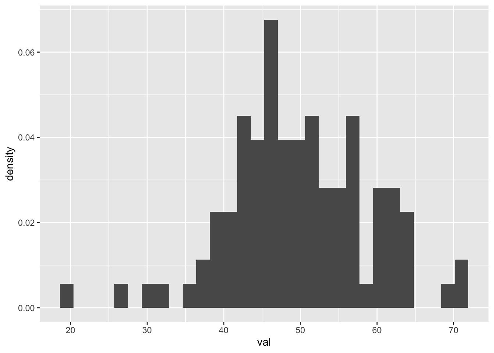
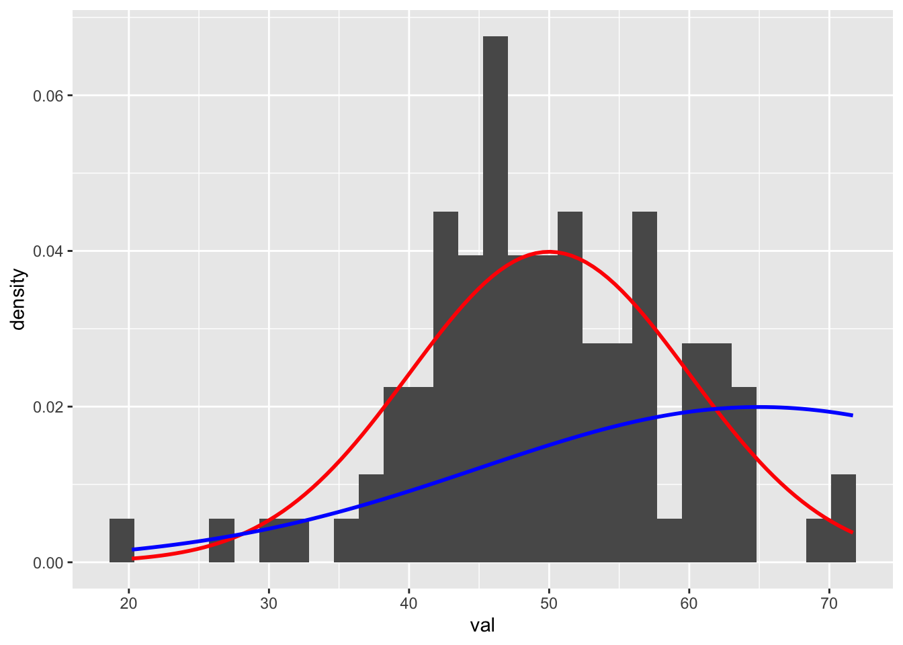

Maximum Likelihood Estimation (MLE) is a method for estimating population parameters (such as the mean and variance for a normal distribution, the rate parameter (lambda) for a Poisson distribution, the regression coefficients for a linear model) from sample data such that the combined probability (likelihood) of obtaining the observed data is maximized. Here, we first explore the calculation of likelihood values generally and then use MLE to estimate the best parameters for defining from what particular normal distribution a set of data is most likely drawn.
22.1 Preliminaries
Install and load the {bbmle} library and load the {tidyverse} and {mosaic} libraries
## Loading required package: stats4
##
## Attaching package: 'bbmle'
##
## The following object is masked from 'package:dplyr':
##
## slice
library(mosaic)
## Registered S3 method overwritten by 'mosaic':
## method from
## fortify.SpatialPolygonsDataFrame ggplot2
##
## The 'mosaic' package masks several functions from core packages in order to add
## additional features. The original behavior of these functions should not be affected by this.
##
## Attaching package: 'mosaic'
##
## The following object is masked from 'package:Matrix':
##
## mean
##
## The following objects are masked from 'package:dplyr':
##
## count, do, tally
##
## The following object is masked from 'package:purrr':
##
## cross
##
## The following object is masked from 'package:ggplot2':
##
## stat
##
## The following objects are masked from 'package:stats':
##
## binom.test, cor, cor.test, cov, fivenum, IQR, median, prop.test,
## quantile, sd, t.test, var
##
## The following objects are masked from 'package:base':
##
## max, mean, min, prod, range, sample, sum
22.2 Probability Density Functions and Likelihoods
A Probability Density Function (PDF) is a function describing the density of a continuous random variable (a probability mass function, or PMF, is an analogous function for discrete random variables). The function’s value can be calculated at any given point in the sample space (i.e., the range of possible values that the random variable might take) and provides the relative likelihood of obtaining that value on a draw from the given distribution.
The PDF for a normal distribution defined by the parameters \(\mu\) and \(\sigma\) is…
Where: - \(\mu\) is the mean (or expected value) of the distribution - \(\sigma^2\) is the variance of the distribution. - \(\sigma\) the standard deviation. - \(e\) is the base of the natural logarithm (approximately 2.71828) - \(\pi\) is a mathematical constant (approximately 3.14159)
Solving this function for any value of \(x\) yields the relative likelihood (\(L\)) of drawing that value from the distribution.
22.3 Calculating Likelihoods
As an example, we can calculate the relative likelihood of drawing the number 45.6 out of a normal distribution with a mean (\(\mu\)) of 50 and a standard deviation (\(\sigma\)) of 10…
val <-45.6mean <-50sd <-10(l <-1/sqrt(2* pi * sd^2) *exp((-(val - mean)^2)/(2* sd^2)))
## [1] 0.03621349
The dnorm() function returns this relative likelihood directly…
(l <-dnorm(val, mean, sd))
## [1] 0.03621349
To further explore calculating likelihoods, let’s create and plot a sample of 100 random variables from a normal distribution with a \(\mu\) of 50 and a \(\sigma\) of 10:
d <-tibble(val =rnorm(100, mean =50, sd =10))p <-ggplot(d) +geom_histogram(aes(x = val, y =after_stat(density)))p
## `stat_bin()` using `bins = 30`. Pick better value with `binwidth`.

The mean and standard deviation of this sample are pretty are close to the parameters that we pass to the rnorm() function, even though (given the limited size of our sample) the distribution is not smooth…
(mean <-mean(d$val))
## [1] 50.7699
(sd <-sd(d$val))
## [1] 10.39291
Now, on top of the histogram of our sample data, let’s plot two different normal distributions, one with the distribution our sample was drawn from (\(\mu\) = 50 and \(\sigma\) = 10, in red) and another with a different \(\mu\) (65) and \(\sigma\) (20).
p <- p +stat_function(fun =function(x) dnorm(x, mean =50, sd =10), color ="red",linewidth =1) +stat_function(fun =function(x) dnorm(x, mean =65, sd =20),color ="blue", linewidth =1)p
## `stat_bin()` using `bins = 30`. Pick better value with `binwidth`.

Based on the figure, it should be pretty clear that our observed sample (our set of 100 random draws) is more likely to have been drawn from the former distribution than the latter.
CHALLENGE
What is the relative likelihood of seeing a value of 41 on a random draw from a normal distribution with \(\mu\) = 50 and \(\sigma\) = 10?
val <-41mean <-50sd <-10# or(l1 <-dnorm(val, mean, sd))
## [1] 0.02660852
CHALLENGE
What is the relative likelihood of seeing a value of 41 on a random draw from a normal distribution with \(\mu\) = 65 and \(\sigma\) = 20?
val <-41mean <-65sd <-10(l2 <-dnorm(val, mean, sd))
## [1] 0.002239453
Note the difference in these two likelihoods, l1 and l2… there is a much higher likelhood of an observation of 41 coming from the first of the two normal distributions we considered. In this case, the likelihood ratio is l1/l2.
l1/l2
## [1] 11.88171
We can also calculate the relative likelihood of drawing a particular set of observations from a given distribution as the product of the likelihoods of each observation as the probability of n independent events is simply the product (\(∏\)) of their independent probabilities. An easy way to calculate the product of a set of numbers is by taking the natural log of each number, summing those values, and then exponentiating the sum. For this reason, likelihood calculations are often operationalized in terms of log likelihoods.
For example, the following operations are equivalent…
5*8*9*4
## [1] 1440
exp(log(5) +log(8) +log(9) +log(4))
## [1] 1440
exp(sum(log(c(5, 8, 9, 4))))
## [1] 1440
CHALLENGE
What is the relative likelihood of drawing the set of three numbers 41, 70, and 10 from a normal distribution with \(\mu\) = 50 and \(\sigma\) = 10?
val <-c(41, 70, 10)mean <-65sd <-10(l <-dnorm(val, mean, sd)) # vector of likelihoods of each value
## [1] 2.239453e-03 3.520653e-02 1.076976e-08
(l[1] * l[2] * l[3]) # product of likelihoods
## [1] 8.491242e-13
(ll <-log(l)) # log likelihoods of each value
## [1] -6.101524 -3.346524 -18.346524
(ll <-sum(ll)) # summed log likelihood
## [1] -27.79457
(l <-exp(ll)) # convert back to likelihood
## [1] 8.491242e-13
NOTE: Likelihoods are always going to be zero or greater, but log likelihoods can be negative. A less negative log likelihood is nonetheless more likely than and more negative one.
CHALLENGE
What are the log likelihood and likelihood of drawing the sample, d, we constructed above from a normal distribution with \(\mu\) = 50 and \(\sigma\) = 10? How do these compare to the log likelihood and likelihood of that same sample being drawn from a normal distribution with \(\mu\) = 65 and \(\sigma\) = 20?
val <- d$valmean <-50sd <-10l <-dnorm(val, mean, sd)ll <-log(l)ll <-sum(ll)(l <-exp(ll)) # a very tiny number!
## [1] 5.523165e-164
mean <-65sd <-20l <-dnorm(val, mean, sd)ll <-log(l)ll <-sum(ll)(l <-exp(ll)) # an even tinier number
## [1] 1.549261e-187
The log likelihood and likelihood are both HIGHER (more likely to have been drawn) from the first distribution.
22.4 Maximum Likelihood Estimation
Now that we have an understanding of how likelihood calculations are done, we can consider the process of maximum likelihood estimation (MLE). MLE allows us to estimate what values of population parameters (e.g., \(\mu\) and \(\sigma\)) are most likely given a dataset and a probability distribution function for the process generating the data (e.g., a Gaussian process).
First, let’s create a function for calculating the negative log likelihood for a set of data under a particular normal distribution. To convert the log likelihood to a negative, we simply multiply it negative 1. The reason we do this is because most optimization algorithms function by searching for parameter values that yield the minimum negative log likelihood rather than the maximum likelihood directly.
verbose_nll <-function(val, mu, sigma, verbose =FALSE) { l <-0# set initial likelihood to 0 to define variable ll <-0# set initial log likelihood to 0 to define variablefor (i in1:length(val)) { l[[i]] =dnorm(val[[i]], mean = mu, sd = sigma) # likelihoods ll[[i]] <-log(l[[i]]) # log likelihoodsif (verbose ==TRUE) {message(paste0("x=", round(val[[i]], 4), " mu=", mu, " sigma=", sigma," L=", round(l[[i]], 4), " logL=", round(ll[[i]], 4))) } } nll <--1*sum(ll)return(nll)}
Testing our function…
# if we include verbose = TRUE as an argument to `verbose_nll`, the function# will print each likelihood and log likelihood value before returning the# summed negative log likelihoodval <- d$valmean <-50sd <-10verbose_nll(val, mean, sd)
## [1] 375.915
mean <-65sd <-20verbose_nll(val, mean, sd)
## [1] 430.1456
… we see that negative log likelihood of our data under the first distribution is smaller than under the second, indicating that it is more likely that are data are drawn from the first distribution.
To use maximum likelihood estimation, we need to create a simpler version of this function that does not have the data as argument, but rather only involves the parameter we want to estimate. The function below does this. Note that this version does not use a loop and has the vector variable val included in the dnorm() function. We also include the argument log = TRUE within the dnorm() function to calculate the log likelihood instead of including that as an extra step.
Testing our function, we should get the same results as above…
val <- d$valmean <-50sd <-10simple_nll(mean, sd)
## [1] 375.915
So far, we’ve just use our function to calculate (negative log) likelihoods of our data with being generated by a Gaussian (normal) process with specific \(\mu\) and \(\sigma\) parameters… but what we really want to do is estimate values for \(\mu\) and \(\sigma\) that have highest likelihood for generating our data. To do this, we will use the mle2() function from the {bbmle} package. This function takes the following arguments…
minuslogl, which is a user-defined function for generating negative log likelihoods… this is what we created above
start, which is a list of initial values for the parameters we want estimate
method, which is the particular algorithm used for optimization of the parameter estimates (mle2() and the optim() function, which it calls, are highly customizable)
NOTE: Be aware that to run the function below, we need to have the variable val, a vector of values, specified outside of the function. We previously set val to d, our random sample of 100 draws from a normal distribution with \(\mu\)=50 and \(\sigma\)=10… feel free to play around with alternatives and see how well the MLE process estimates these parameters.
val <-rnorm(10000, mean =50, sd =10)library(bbmle)mle_norm <-mle2(minuslogl = simple_nll, start =list(mu =0, sigma =1), method ="SANN"# simulated annealing method of optimization)mle_norm
An alternative for MLE is the maxLik() function from the {maxLik} package. To use function, we again first define our own log likelihood function, but this time we do not want an negative log likelihood, so we do negate it, and it should also have only one argument… a vector of parameter values.
library(maxLik)
## Loading required package: miscTools
##
## Attaching package: 'miscTools'
## The following object is masked from 'package:bbmle':
##
## stdEr
##
## Please cite the 'maxLik' package as:
## Henningsen, Arne and Toomet, Ott (2011). maxLik: A package for maximum likelihood estimation in R. Computational Statistics 26(3), 443-458. DOI 10.1007/s00180-010-0217-1.
##
## If you have questions, suggestions, or comments regarding the 'maxLik' package, please use a forum or 'tracker' at maxLik's R-Forge site:
## https://r-forge.r-project.org/projects/maxlik/
simple_ll <-function(parameters) {# parameters is a vector of parameter values mu <- parameters[1] sigma <- parameters[2] ll =sum(dnorm(val, mean = mu, sd = sigma, log =TRUE))return(ll)}# test...simple_ll(c(50, 10))
## [1] -37266.75
# an alternative version for logliksimple_ll <-function(parameters) { mu <- parameters[1] sigma <- parameters[2] N <-length(val) ll <--1* N *log(sqrt(2* pi)) - N *log(sigma) -0.5*sum((val - mu)^2/sigma^2)return(ll)}# test...simple_ll(c(50, 10))
## [1] -37266.75
As for mle2(), for maxLik() we need to specify several arguments:
logLik, which is our user-defined function for generating (not negative!) log likelihoods
start, which is a named vector of initial values for the parameters we want estimate
method, which is the particular algorithm used for optimization of the parameter estimates
## Rows: 1000 Columns: 10
## ── Column specification ────────────────────────────────────────────────────────
## Delimiter: ","
## chr (4): first_name, last_name, gender, major
## dbl (6): id, height, weight, zombies_killed, years_of_education, age
##
## ℹ Use `spec()` to retrieve the full column specification for this data.
## ℹ Specify the column types or set `show_col_types = FALSE` to quiet this message.
# Standard OLS linear regression model with our zombie apocalypse survivor# datasetm <-lm(data = d, height ~ weight)summary(m)
##
## Call:
## lm(formula = height ~ weight, data = d)
##
## Residuals:
## Min 1Q Median 3Q Max
## -7.1519 -1.5206 -0.0535 1.5167 9.4439
##
## Coefficients:
## Estimate Std. Error t value Pr(>|t|)
## (Intercept) 39.565446 0.595815 66.41 <2e-16 ***
## weight 0.195019 0.004107 47.49 <2e-16 ***
## ---
## Signif. codes: 0 '***' 0.001 '**' 0.01 '*' 0.05 '.' 0.1 ' ' 1
##
## Residual standard error: 2.389 on 998 degrees of freedom
## Multiple R-squared: 0.6932, Adjusted R-squared: 0.6929
## F-statistic: 2255 on 1 and 998 DF, p-value: < 2.2e-16
# Compare to... Likelihood based linear regression with `mle2()`... has 3# parameters: b0, b1, and sigma, or the standard deviation in (presumably# normally distributed!) residualssimple_nll <-function(b0, b1, sigma, verbose =TRUE) {# here, we say how mu is calculated based on parameters mu <- b0 + b1 * d$weight N <-nrow(d) ll <--1* N *log(sqrt(2* pi)) - N *log(sigma) -0.5*sum((d$height - mu)^2/sigma^2) nll <--1* llreturn(nll)}mle_norm <-mle2(minuslogl = simple_nll, start =list(b0 =10, b1 =0, sigma =1),method ="Nelder-Mead")mle_norm
# Or compare to... Likelihood based linear regression with `maxLik()`loglik <-function(parameters) { b0 <- parameters[1] b1 <- parameters[2] sigma <- parameters[3] N <-nrow(d)# here, we say how mu is calculated based on parameters mu <- b0 + b1 * d$weight # estimating mean height as a function of weight# then use this mu in a similar fashion as previously ll <--1* N *log(sqrt(2* pi)) - N *log(sigma) -0.5*sum((d$height - mu)^2/sigma^2)return(ll)}mle_norm <-maxLik(loglik, start =c(beta0 =0, beta1 =0, sigma =1), method ="NM")summary(mle_norm)
# Maximum Likelihood Estimation Example**Maximum Likelihood Estimation** (MLE) is a method for estimating population parameters (such as the mean and variance for a normal distribution, the rate parameter (lambda) for a Poisson distribution, the regression coefficients for a linear model) from sample data such that the combined probability (likelihood) of obtaining the observed data is maximized. Here, we first explore the calculation of likelihood values generally and then use MLE to estimate the best parameters for defining from what particular normal distribution a set of data is most likely drawn.## PreliminariesInstall and load the {bbmle} library and load the {tidyverse} and {mosaic} libraries```{r}library(tidyverse)library(bbmle)library(mosaic)```## Probability Density Functions and LikelihoodsA **Probability Density Function** (PDF) is a function describing the density of a continuous random variable (a probability mass function, or PMF, is an analogous function for discrete random variables). The function's value can be calculated at any given point in the sample space (i.e., the range of possible values that the random variable might take) and provides the **relative likelihood** of obtaining that value on a draw from the given distribution.The PDF for a normal distribution defined by the parameters $\mu$ and $\sigma$ is...$$f(x | \mu, \sigma) = \frac{1}{\sqrt{2\pi\sigma^2}}e^\frac{-(x-\mu)^2}{2\sigma^2}$$Where:- $\mu$ is the mean (or expected value) of the distribution- $\sigma^2$ is the variance of the distribution. - $\sigma$ the standard deviation. - $e$ is the base of the natural logarithm (approximately 2.71828)- $\pi$ is a mathematical constant (approximately 3.14159) Solving this function for any value of $x$ yields the relative likelihood ($L$) of drawing that value from the distribution.## Calculating LikelihoodsAs an example, we can calculate the relative likelihood of drawing the number 45.6 out of a normal distribution with a mean ($\mu$) of 50 and a standard deviation ($\sigma$) of 10...```{r}val <-45.6mean <-50sd <-10(l <-1/sqrt(2* pi * sd^2) *exp((-(val - mean)^2)/(2* sd^2)))```The `dnorm()` function returns this relative likelihood directly...```{r}(l <-dnorm(val, mean, sd))```To further explore calculating likelihoods, let's create and plot a sample of 100 random variables from a normal distribution with a $\mu$ of 50 and a $\sigma$ of 10:```{r}d <-tibble(val =rnorm(100, mean =50, sd =10))p <-ggplot(d) +geom_histogram(aes(x = val, y =after_stat(density)))p```The mean and standard deviation of this sample are pretty are close to the parameters that we pass to the `rnorm()` function, even though (given the limited size of our sample) the distribution is not smooth...```{r}(mean <-mean(d$val))(sd <-sd(d$val))```Now, on top of the histogram of our sample data, let's plot two different normal distributions, one with the distribution our sample was drawn from ($\mu$ = 50 and $\sigma$ = 10, in red) and another with a different $\mu$ (65) and $\sigma$ (20).```{r}p <- p +stat_function(fun =function(x) dnorm(x, mean =50, sd =10), color ="red", linewidth =1) +stat_function(fun =function(x) dnorm(x, mean =65, sd =20), color ="blue", linewidth =1)p```Based on the figure, it should be pretty clear that our observed sample (our set of 100 random draws) is **more likely** to have been drawn from the former distribution than the latter.### CHALLENGE {.unnumbered}What is the relative likelihood of seeing a value of 41 on a random draw from a normal distribution with $\mu$ = 50 and $\sigma$ = 10?```{r}val <-41mean <-50sd <-10# or(l1 <-dnorm(val, mean, sd))```### CHALLENGE {.unnumbered}What is the relative likelihood of seeing a value of 41 on a random draw from a normal distribution with $\mu$ = 65 and $\sigma$ = 20?```{r}val <-41mean <-65sd <-10(l2 <-dnorm(val, mean, sd))```Note the difference in these two likelihoods, **l1** and **l2**... there is a much higher likelhood of an observation of 41 coming from the first of the two normal distributions we considered. In this case, the **likelihood ratio** is **l1/l2**.```{r}l1/l2```We can also calculate the relative likelihood of drawing a particular set of observations from a given distribution as the product of the likelihoods of each observation as the probability of *n* independent events is simply the product ($∏$) of their independent probabilities. An easy way to calculate the product of a set of numbers is by taking the natural log of each number, summing those values, and then exponentiating the sum. For this reason, likelihood calculations are often operationalized in terms of *log likelihoods*.For example, the following operations are equivalent...```{r}5*8*9*4exp(log(5) +log(8) +log(9) +log(4))exp(sum(log(c(5, 8, 9, 4))))```### CHALLENGE {.unnumbered}What is the relative likelihood of drawing the set of three numbers 41, 70, and 10 from a normal distribution with $\mu$ = 50 and $\sigma$ = 10?```{r}val <-c(41, 70, 10)mean <-65sd <-10(l <-dnorm(val, mean, sd)) # vector of likelihoods of each value(l[1] * l[2] * l[3]) # product of likelihoods(ll <-log(l)) # log likelihoods of each value(ll <-sum(ll)) # summed log likelihood(l <-exp(ll)) # convert back to likelihood```> NOTE: Likelihoods are always going to be zero or greater, but log likelihoods can be negative. A less negative log likelihood is nonetheless more likely than and more negative one.### CHALLENGE {.unnumbered}What are the log likelihood and likelihood of drawing the sample, *d*, we constructed above from a normal distribution with $\mu$ = 50 and $\sigma$ = 10? How do these compare to the log likelihood and likelihood of that same sample being drawn from a normal distribution with $\mu$ = 65 and $\sigma$ = 20?```{r}val <- d$valmean <-50sd <-10l <-dnorm(val, mean, sd)ll <-log(l)ll <-sum(ll)(l <-exp(ll)) # a very tiny number!mean <-65sd <-20l <-dnorm(val, mean, sd)ll <-log(l)ll <-sum(ll)(l <-exp(ll)) # an even tinier number```The log likelihood and likelihood are both HIGHER (more likely to have been drawn) from the first distribution.## Maximum Likelihood EstimationNow that we have an understanding of how likelihood calculations are done, we can consider the process of **maximum likelihood estimation** (MLE). MLE allows us to estimate what values of population parameters (e.g., $\mu$ and $\sigma$) are most likely *given* a dataset and a probability distribution function for the process generating the data (e.g., a Gaussian process).First, let's create a function for calculating the **negative** log likelihood for a set of data under a particular normal distribution. To convert the log likelihood to a negative, we simply multiply it negative 1. The reason we do this is because most optimization algorithms function by searching for parameter values that yield the minimum negative log likelihood rather than the maximum likelihood directly.```{r}verbose_nll <-function(val, mu, sigma, verbose =FALSE) { l <-0# set initial likelihood to 0 to define variable ll <-0# set initial log likelihood to 0 to define variablefor (i in1:length(val)){ l[[i]] =dnorm(val[[i]], mean = mu, sd = sigma) # likelihoods ll[[i]] <-log(l[[i]]) # log likelihoodsif (verbose ==TRUE) {message(paste0("x=", round(val[[i]], 4)," mu=", mu," sigma=", sigma," L=", round(l[[i]], 4)," logL=", round(ll[[i]],4))) } } nll <--1*sum(ll)return(nll)}```Testing our function...```{r}# if we include verbose = TRUE as an argument to `verbose_nll`, the function will print each likelihood and log likelihood value before returning the summed negative log likelihoodval <- d$valmean <-50sd <-10verbose_nll(val, mean, sd)mean <-65sd <-20verbose_nll(val, mean, sd)```... we see that negative log likelihood of our data under the first distribution is smaller than under the second, indicating that it is more likely that are data are drawn from the first distribution.To use maximum likelihood estimation, we need to create a simpler version of this function that does not have the data as argument, but rather only involves the parameter we want to estimate. The function below does this. Note that this version does not use a loop and has the vector variable *val* included in the `dnorm()` function. We also include the argument `log = TRUE` within the `dnorm()` function to calculatethe log likelihood instead of including that as an extra step.```{r}simple_nll <-function(mu, sigma, verbose =TRUE) { ll =sum(dnorm(val, mean = mu, sd = sigma, log =TRUE)) nll <--1* llreturn(nll)}```Testing our function, we should get the same results as above...```{r}val <- d$valmean <-50sd <-10simple_nll(mean, sd)```So far, we've just use our function to calculate (negative log) likelihoods of our data with being generated by a Gaussian (normal) process with specific $\mu$ and $\sigma$ parameters... but what we really want to do is estimate values for $\mu$ and $\sigma$ that have highest likelihood for generating our data. To do this, we will use the `mle2()` function from the {bbmle} package. This function takes the following arguments...- **minuslogl**, which is a user-defined function for generating negative log likelihoods... this is what we created above- **start**, which is a list of initial values for the parameters we want estimate- **method**, which is the particular algorithm used for optimization of the parameter estimates (`mle2()` and the `optim()` function, which it calls, are highly customizable)> NOTE: Be aware that to run the function below, we need to have the variable **val**, a vector of values, specified outside of the function. We previously set **val** to **d**, our random sample of 100 draws from a normal distribution with $\mu$=50 and $\sigma$=10... feel free to play around with alternatives and see how well the MLE process estimates these parameters.```{r}val <-rnorm(10000, mean =50, sd =10)library(bbmle)mle_norm <-mle2(minuslogl = simple_nll,start =list(mu =0, sigma =1),method ="SANN"# simulated annealing method of optimization)mle_normsummary(mle_norm)```An alternative for MLE is the `maxLik()` function from the {maxLik} package. To use function, we again first define our own log likelihood function, but this time we do not want an negative log likelihood, so we do negate it, and it should also have only one argument... a **vector** of parameter values.```{r}library(maxLik)simple_ll <-function(parameters) { # parameters is a vector of parameter values mu <- parameters[1] sigma <- parameters[2] ll =sum(dnorm(val, mean = mu, sd = sigma, log =TRUE))return(ll)}# test...simple_ll(c(50, 10))# an alternative version for logliksimple_ll <-function(parameters) { mu <- parameters[1] sigma <- parameters[2] N <-length(val) ll <--1* N *log(sqrt(2*pi)) - N*log(sigma) -0.5*sum((val - mu)^2/sigma^2)return(ll)}# test...simple_ll(c(50, 10))```As for `mle2()`, for `maxLik()` we need to specify several arguments:- **logLik**, which is our user-defined function for generating (not negative!) log likelihoods- **start**, which is a named vector of initial values for the parameters we want estimate- **method**, which is the particular algorithm used for optimization of the parameter estimates```{r}mle_norm <-maxLik(logLik = simple_ll, start=c(mu=0, sigma=1), method ="NM")summary(mle_norm)```The results should be very comparable to those generated using `mle2()`.## MLE for Simple Linear RegressionLoad in our zombie apocalypse survivors dataset...```{r}library(tidyverse)f <-"https://raw.githubusercontent.com/difiore/ada-datasets/main/zombies.csv"d <-read_csv(f, col_names =TRUE)# Standard OLS linear regression model with our zombie apocalypse survivor datasetm <-lm(data = d, height ~ weight)summary(m)# Compare to...# Likelihood based linear regression with `mle2()`... has 3 parameters: b0, b1, and sigma, or the standard deviation in (presumably normally distributed!) residualssimple_nll <-function(b0, b1, sigma, verbose =TRUE) {# here, we say how mu is calculated based on parameters mu <- b0 + b1 * d$weight N <-nrow(d) ll <--1* N*log(sqrt(2*pi)) - N*log(sigma) -0.5*sum((d$height - mu)^2/sigma^2) nll <--1* llreturn(nll)}mle_norm <-mle2(minuslogl = simple_nll,start =list(b0=10, b1=0, sigma=1), method ="Nelder-Mead")mle_normsummary(mle_norm)# Or compare to...# Likelihood based linear regression with `maxLik()`loglik <-function(parameters) { b0 <- parameters[1] b1 <- parameters[2] sigma <- parameters[3] N <-nrow(d)# here, we say how mu is calculated based on parameters mu <- b0 + b1 * d$weight # estimating mean height as a function of weight# then use this mu in a similar fashion as previously ll <--1* N*log(sqrt(2*pi)) - N*log(sigma) -0.5*sum((d$height - mu)^2/sigma^2)return(ll)}mle_norm <-maxLik(loglik,start=c(beta0=0, beta1=0, sigma=1),method ="NM")summary(mle_norm)```